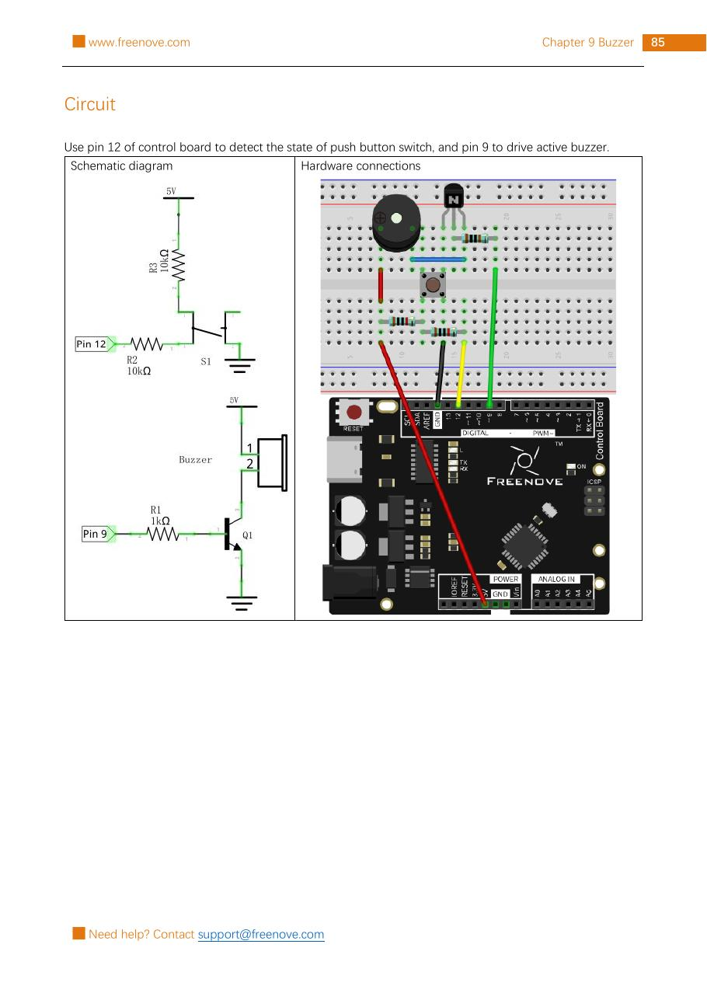

Read a button on pin 12. While it is pressed, pin 9 switches an NPN transistor on so the active buzzer can sound. Release the button and the buzzer should be quiet.
Gather the parts
Uno-compatible board and USB cable
Breadboard
1 active buzzer
1 NPN transistor (the kit’s 8050)
1 push button
1 × 1 kΩ resistor and 2 × 10 kΩ resistors
6 jumper wires
Important: this lesson uses an active buzzer, which has its own oscillator and makes one steady pitch when powered. Do not substitute the passive buzzer from the next project.
Build it, one check at a time
Step 1 — Study the reference circuit
Keep USB unplugged. The reference page shows both the schematic and the breadboard layout for this exact kit. The button node is normally held at 5 V by a 10 kΩ resistor; pressing the button connects that node to GND. That is why this circuit reads a press as LOW.

Reference image: Freenove Ultimate Starter Kit, Tutorial.pdf, Chapter 9, Project 9.1, PDF page 89 / printed page 85. Reused unchanged under CC BY-NC-SA 3.0.
Step 2 — Make the button input
Build the button section exactly as shown: connect 5 V → 10 kΩ resistor → the pin 12 node. From that same pin 12 node, go through the other 10 kΩ resistor → push button → GND. Put the button across the breadboard’s center gap so its two sides are not already connected.
Step 3 — Add the transistor and buzzer
Use the source image to place the kit’s NPN transistor in the same orientation. Do not guess its leg order: match the reference before connecting it. Connect pin 9 → 1 kΩ resistor → transistor base. Connect the transistor emitter to GND. Connect the buzzer between 5 V and the transistor’s collector, following the shown buzzer polarity and transistor placement.
The transistor is the small switch for the buzzer’s current. Pin 9 controls the switch instead of trying to power the buzzer directly.
Step 4 — Upload the sketch
Connect USB, select your Uno-compatible board and serial port in Arduino IDE, then upload this original sketch.
What the code means:INPUT lets pin 12 read the button circuit. The circuit makes a press read LOW. When that test is true, the code sends HIGH to pin 9, turning the transistor and active buzzer on.
Step 5 — Test and troubleshoot
Press and hold the button. The active buzzer should make one steady sound; releasing the button should stop it. If it does not:
Unplug USB before moving wires.
Compare every breadboard row with the reference image, especially the button’s center-gap placement.
Check that the pin 12 button path reaches GND only through the pressed button.
Check the transistor orientation and the buzzer polarity against the source layout.
Confirm the sketch uses pin 12 for input and pin 9 for output, then select the correct board and port before uploading again.
Tiny challenge
Before you change anything, predict what would happen if the code tested for HIGH instead of LOW. Try it, observe safely, then restore the original test. Explain why the button’s pull-up resistor changes which level means “pressed.”
The unchanged reference image and upstream material are from Freenove’s Ultimate Starter Kit and are used under CC BY-NC-SA 3.0. Attribution, noncommercial, and ShareAlike requirements apply.